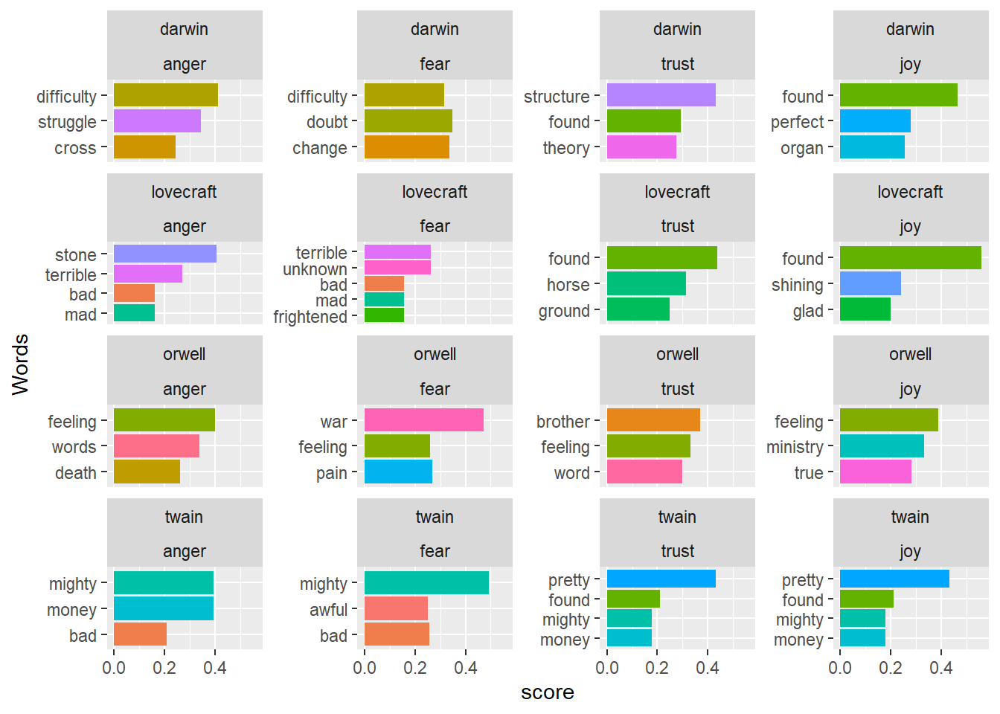

Sentiment Analysis in R
Martin Schweinberger
2022-10-30

Introduction
This tutorial introduces sentiment analysis (SA) and shows how to perform a SA in R.

This tutorial is aimed at beginners and intermediate users of R with the aim of showcasing how to perform SA on textual data using R. The aim is not to provide a fully-fledged analysis but rather to show and exemplify selected useful methods associated with sentiment detection, analysis, and visualization. The analysis shown here is in parts based on the 2nd chapter of Text Mining with R - the e-version of this chapter on sentiment analysis can be found here.
The entire R Notebook for the tutorial can be downloaded here.
If you want to render the R Notebook on your machine, i.e. knitting the
document to html or a pdf, you need to make sure that you have R and
RStudio installed and you also need to download the bibliography
file and store it in the same folder where you store the
Rmd file.

Click
this link to open an interactive version of this tutorial on
MyBinder.org.
This interactive Jupyter notebook allows
you to execute code yourself and you can also change and edit the
notebook, e.g. you can change code and upload your own data.
SA is a cover term for approaches which extract information on emotion or opinion from natural language (Silge and Robinson 2017). SA have been successfully applied to analysis of language data in a wide range of disciplines such as psychology, economics, education, as well as political and social sciences. Commonly SA are used to determine the stance of a larger group of speakers towards a given phenomenon such as political candidates or parties, product lines or situations. Crucially, SA are employed in these domains because they have advantages compared to alternative methods investigating the verbal expression of emotion. One advantage of SA is that the emotion coding of SA is fully replicable.
Preparation and session set up
This tutorial is based on R. If you have not installed R or are new to it, you will find an introduction to and more information how to use R here. For this tutorials, we need to install certain packages from an R library so that the scripts shown below are executed without errors. Before turning to the code below, please install the packages by running the code below this paragraph. If you have already installed the packages mentioned below, then you can skip ahead and ignore this section. To install the necessary packages, simply run the following code - it may take some time (between 1 and 5 minutes to install all of the packages so you do not need to worry if it takes some time).
# install packages
install.packages("dplyr")
install.packages("stringr")
install.packages("tidyr")
install.packages("tibble")
install.packages("tidytext")
install.packages("textdata")
install.packages("Hmisc")
install.packages("sentimentr")
install.packages("zoo")
install.packages("flextable")
# install klippy for copy-to-clipboard button in code chunks
install.packages("remotes")
remotes::install_github("rlesur/klippy")Now that we have installed the packages, we activate them as shown below.
# activate packages
library(dplyr)
library(stringr)
library(tidyr)
library(tibble)
library(tidytext)
library(textdata)
library(Hmisc)
library(sentimentr)
library(zoo)
library(flextable)
# activate klippy for copy-to-clipboard button
klippy::klippy()Once you have installed R and RStudio and initiated the session by executing the code shown above, you are good to go.
What is Sentiment Analysis?
Sentiment Analysis (SA) extracts information on emotion or opinion from natural language (Silge and Robinson 2017). Most forms of SA provides information about positive or negative polarity, e.g. whether a tweet is positive or negative. As such, SA represents a type of classifier that assigns values to texts. As most SA only provide information about polarity, SA is often regarded as rather coarse-grained and, thus, rather irrelevant for the types of research questions in linguistics.
In the language sciences, SA can also be a very helpful tool if the type of SA provides more fine-grained information. In the following, we will perform such a information-rich SA. The SA used here does not only provide information about polarity but it will also provide association values for eight core emotions.
The more fine-grained output is made possible by relying on the Word-Emotion Association Lexicon (Mohammad and Turney 2013), which comprises 10,170 terms, and in which lexical elements are assigned scores based on ratings gathered through the crowd-sourced Amazon Mechanical Turk service. For the Word-Emotion Association Lexicon raters were asked whether a given word was associated with one of eight emotions. The resulting associations between terms and emotions are based on 38,726 ratings from 2,216 raters who answered a sequence of questions for each word which were then fed into the emotion association rating (cf. Mohammad and Turney 2013). Each term was rated 5 times. For 85 percent of words, at least 4 raters provided identical ratings. For instance, the word cry or tragedy are more readily associated with SADNESS while words such as happy or beautiful are indicative of JOY and words like fit or burst may indicate ANGER. This means that the SA here allows us to investigate the expression of certain core emotions rather than merely classifying statements along the lines of a crude positive-negative distinction.
Getting started
In the following, we will perform a SA to investigate the emotionality of five different novels. We will start with the first example and load five pieces of literature.
darwin <- base::readRDS(url("https://slcladal.github.io/data/origindarwin.rda", "rb"))
twain <- base::readRDS(url("https://slcladal.github.io/data/twainhuckfinn.rda", "rb"))
orwell <- base::readRDS(url("https://slcladal.github.io/data/orwell.rda", "rb"))
lovecraft <- base::readRDS(url("https://slcladal.github.io/data/lovecraftcolor.rda", "rb")). |
|---|
THE ORIGIN OF SPECIES |
BY |
CHARLES DARWIN |
AN HISTORICAL SKETCH |
OF THE PROGRESS OF OPINION ON |
THE ORIGIN OF SPECIES |
INTRODUCTION |
When on board H.M.S. 'Beagle,' as naturalist, I was much struck |
with certain facts in the distribution of the organic beings in- |
habiting South America, and in the geological relations of the |
Write function to clean data
txtclean <- function(x, title){
require(dplyr)
require(stringr)
require(tibble)
x <- x %>%
iconv(to = "UTF-8") %>%
base::tolower() %>%
paste0(collapse = " ") %>%
stringr::str_squish()%>%
stringr::str_split(" ") %>%
unlist() %>%
tibble::tibble() %>%
dplyr::select(word = 1, everything()) %>%
dplyr::mutate(novel = title) %>%
dplyr::anti_join(stop_words) %>%
dplyr::mutate(word = str_remove_all(word, "\\W")) %>%
dplyr::filter(word != "")
}Process and clean texts.
# process text data
darwin_clean <- txtclean(darwin, "darwin")
lovecraft_clean <- txtclean(lovecraft, "lovecraft")
orwell_clean <- txtclean(orwell, "orwell")
twain_clean <- txtclean(twain, "twain")word | novel |
|---|---|
origin | darwin |
species | darwin |
charles | darwin |
darwin | darwin |
historical | darwin |
sketch | darwin |
progress | darwin |
opinion | darwin |
origin | darwin |
species | darwin |
Basic Sentiment Analysis
Now, we combine the data with the Word-Emotion Association Lexicon (Mohammad and Turney 2013).
novels_anno <- rbind(darwin_clean, twain_clean, orwell_clean, lovecraft_clean) %>%
dplyr::group_by(novel) %>%
dplyr::mutate(words = n()) %>%
dplyr::left_join(tidytext::get_sentiments("nrc")) %>%
dplyr::mutate(novel = factor(novel),
sentiment = factor(sentiment))word | novel | words | sentiment |
|---|---|---|---|
origin | darwin | 76,710 | |
species | darwin | 76,710 | |
charles | darwin | 76,710 | |
darwin | darwin | 76,710 | |
historical | darwin | 76,710 | |
sketch | darwin | 76,710 | |
progress | darwin | 76,710 | anticipation |
progress | darwin | 76,710 | joy |
progress | darwin | 76,710 | positive |
opinion | darwin | 76,710 |
We will now summarize the results of the SA and calculate the percentages of the prevalence of emotions across the books.
novels <- novels_anno %>%
dplyr::group_by(novel) %>%
dplyr::group_by(novel, sentiment) %>%
dplyr::summarise(sentiment = unique(sentiment),
sentiment_freq = n(),
words = unique(words)) %>%
dplyr::filter(is.na(sentiment) == F) %>%
dplyr::mutate(percentage = round(sentiment_freq/words*100, 1))novel | sentiment | sentiment_freq | words | percentage |
|---|---|---|---|---|
darwin | anger | 1,255 | 76,710 | 1.6 |
darwin | anticipation | 2,291 | 76,710 | 3.0 |
darwin | disgust | 851 | 76,710 | 1.1 |
darwin | fear | 2,236 | 76,710 | 2.9 |
darwin | joy | 1,754 | 76,710 | 2.3 |
darwin | negative | 4,294 | 76,710 | 5.6 |
darwin | positive | 6,469 | 76,710 | 8.4 |
darwin | sadness | 2,050 | 76,710 | 2.7 |
darwin | surprise | 1,239 | 76,710 | 1.6 |
darwin | trust | 3,955 | 76,710 | 5.2 |
After performing the SA, visualize the results and show the scores fro each core emotion by book.
novels %>%
dplyr::filter(sentiment != "positive",
sentiment != "negative") %>%
ggplot(aes(sentiment, percentage, fill = novel)) +
geom_bar(stat="identity",
position=position_dodge()) +
scale_fill_manual(name = "", values=c("orange", "gray70", "red", "grey30")) +
theme_bw() +
theme(legend.position = "top")
We can also display the emotions by book and re-level sentiment so that the different core emotions are ordered from more negative (red) to more positive (blue).
novels %>%
dplyr::filter(sentiment != "positive",
sentiment != "negative") %>%
dplyr::mutate(sentiment = factor(sentiment,
levels = c("anger", "fear", "disgust", "sadness",
"surprise", "anticipation", "trust", "joy"))) %>%
ggplot(aes(novel, percentage, fill = sentiment)) +
geom_bar(stat="identity", position=position_dodge()) +
scale_fill_brewer(palette = "RdBu") +
theme_bw() +
theme(legend.position = "right") +
coord_flip()
Identifying important emotives
We now check, which words have contributed to the emotionality scores. In other words, we investigate, which words are most important for the emotion scores within each novel. For the sake of interpretability, we will remove several core emotion categories and also the polarity.
novels_impw <- novels_anno %>%
dplyr::filter(!is.na(sentiment),
sentiment != "anticipation",
sentiment != "surprise",
sentiment != "disgust",
sentiment != "negative",
sentiment != "sadness",
sentiment != "positive") %>%
dplyr::mutate(sentiment = factor(sentiment, levels = c("anger", "fear", "trust", "joy"))) %>%
dplyr::group_by(novel) %>%
dplyr::count(word, sentiment, sort = TRUE) %>%
dplyr::group_by(novel, sentiment) %>%
dplyr::top_n(3) %>%
dplyr::mutate(score = n/sum(n))novel | word | sentiment | n | score |
|---|---|---|---|---|
darwin | structure | trust | 243 | 0.4308511 |
darwin | found | trust | 166 | 0.2943262 |
darwin | found | joy | 166 | 0.4649860 |
darwin | theory | trust | 155 | 0.2748227 |
twain | pretty | trust | 148 | 0.4327485 |
twain | pretty | joy | 148 | 0.4327485 |
orwell | war | fear | 114 | 0.4710744 |
darwin | doubt | fear | 106 | 0.3486842 |
darwin | change | fear | 102 | 0.3355263 |
darwin | perfect | joy | 100 | 0.2801120 |
We can now visualize the top three words for the remaining core emotion categories.
novels_impw %>%
dplyr::group_by(novel) %>%
slice_max(score, n = 20) %>%
dplyr::arrange(desc(score)) %>%
dplyr::ungroup() %>%
ggplot(aes(x = reorder(word, score), y = score, fill = word)) +
facet_wrap(novel~sentiment, ncol = 4, scales = "free_y") +
geom_col(show.legend = FALSE) +
coord_flip() +
labs(x = "Words")
Calculating and dispalying polarity
Now, we visualize the polarity of each book, i.e. the ratio of the number of positive emotion words divided by the number of negative words.
novels %>%
dplyr::filter(sentiment == "positive" | sentiment == "negative") %>%
dplyr::select(-percentage, -words) %>%
dplyr::mutate(sentiment_sum = sum(sentiment_freq),
positive = sentiment_sum-sentiment_freq) %>%
dplyr::filter(sentiment != "positive") %>%
dplyr::rename(negative = sentiment_freq) %>%
dplyr::select(novel, positive, negative) %>%
dplyr::group_by(novel) %>%
dplyr::summarise(polarity = positive/negative) %>%
ggplot(aes(reorder(novel, polarity, mean), polarity, fill = novel)) +
geom_bar(stat = "identity") +
geom_text(aes(y = polarity-0.1, label = round(polarity, 2)),
color = "white", size = 4) +
theme_bw() +
labs(y = "Polarity\n(ration of positive to negative emitives)",
x = "") +
coord_cartesian(y= c(0,2)) +
scale_y_continuous(breaks = seq(0,2,1),
labels = c("more negative", "neutral", "more positive")) +
theme(legend.position = "none")
Overall, all books are in the positive range (the polarity score is not negative) and we see that lovecraft is the book with the most negative emotion words while darwin is the most positive book as it has the highest average polarity ratio.
Calculating and dispalying changes in polarity
There are two main methods for tracking changes in polarity: binning and moving averages. binning splits the data up into sections and calculates the polarity ration within each bin. Moving averages calculate the mean within windows that are then shifted forward. We begin with an exemplification of binning and then move on to calculating moving averages.
Binning
The following code chunk uses binning to determine the polarity and subsequently displaying changes in polarity across the development of the novels’ plots.
novels_bin <- novels_anno %>%
dplyr::group_by(novel) %>%
dplyr::filter(is.na(sentiment) | sentiment == "negative" | sentiment == "positive") %>%
dplyr::mutate(sentiment = as.character(sentiment),
sentiment = case_when(is.na(sentiment) ~ "0",
TRUE ~ sentiment),
sentiment= case_when(sentiment == "0" ~ 0,
sentiment == "positive" ~ 1,
TRUE ~ -1),
id = 1:n(),
index = as.numeric(cut2(id, m=100))) %>%
dplyr::group_by(novel, index) %>%
dplyr::summarize(index = unique(index),
polarity = mean(sentiment))novel | index | polarity |
|---|---|---|
darwin | 1 | 0.03960396 |
darwin | 2 | 0.12000000 |
darwin | 3 | 0.11000000 |
darwin | 4 | 0.09000000 |
darwin | 5 | 0.01000000 |
darwin | 6 | 0.11000000 |
darwin | 7 | 0.03000000 |
darwin | 8 | 0.08000000 |
darwin | 9 | 0.04000000 |
darwin | 10 | 0.01000000 |
We now have an average polarity for each bin and can plot this polarity over the development of the story.
ggplot(novels_bin, aes(index, polarity)) +
facet_wrap(vars(novel), scales="free_x") +
geom_smooth(se = F, col = "black") +
theme_bw() +
labs(y = "polarity ratio (mean by bin)",
x = "index (bin)")
Moving average
Another method for tracking changes in polarity over time is to calculate rolling or moving means. It should be noted thought that rolling means are not an optimal method for tracking changes over time and rather represent a method for smoothing chaotic time-series data. However, they can be used to complement the analysis of changes that are detected by binning.
To calculate moving averages, we will assign words with positive polarity a value +1 and words with negative polarity a value of -1 (neutral words are coded as 0). A rolling mean calculates the mean over a fixed window span. Once the initial mean is calculated, the window is shifted to the next position and the mean is calculated for that window of values, and so on. We set the window size to 100 words which represents an arbitrary value.
novels_change <- novels_anno %>%
dplyr::filter(is.na(sentiment) | sentiment == "negative" | sentiment == "positive") %>%
dplyr::group_by(novel) %>%
dplyr::mutate(sentiment = as.character(sentiment),
sentiment = case_when(is.na(sentiment) ~ "0",
TRUE ~ sentiment),
sentiment= case_when(sentiment == "0" ~ 0,
sentiment == "positive" ~ 1,
TRUE ~ -1),
id = 1:n()) %>%
dplyr::summarise(id = id,
rmean=rollapply(sentiment, 100, mean, align='right', fill=NA)) %>%
na.omit()novel | id | rmean |
|---|---|---|
darwin | 100 | 0.04 |
darwin | 101 | 0.04 |
darwin | 102 | 0.04 |
darwin | 103 | 0.04 |
darwin | 104 | 0.04 |
darwin | 105 | 0.04 |
darwin | 106 | 0.04 |
darwin | 107 | 0.04 |
darwin | 108 | 0.04 |
darwin | 109 | 0.04 |
We will now display the values of the rolling mean to check if three are notable trends in how the polarity shifts over the course of the unfolding of the story within George Orwell’s Nineteen Eighty-Four.
ggplot(novels_change, aes(id, rmean)) +
facet_wrap(vars(novel), scales="free_x") +
geom_smooth(se = F, col = "black") +
theme_bw() +
labs(y = "polarity ratio (rolling mean, k = 100)",
x = "index (word in monograph)")
The difference between the rolling mean and the binning is quite notable and results from the fact, that rolling means represent a smoothing method rather than a method to track changes over time.
Neutralizing negation
So far we have ignored that negation affects the meaning and also the sentiment that is expressed by words. In practice, this means that the sentence you are a good boy and You are not a good boy would receive the same scores as we strictly focused on the use of emotive but ignored how words interact and how the context affects word meaning.
In fact, we removed not and other such negators (e.g. none, never, or neither) when we removed stop words. In this section, we want to discover how we can incorporate context in our SA. Unfortunately, we have to restrict this example to an analysis of polarity as performing a context-sensitive sentiment analysis that would extend the Word-Emotion Association Lexicon would be quite complex and require generating our own sentiment dictionary.
We begin by cleaning George Orwell’s Nineteen Eighty-Four, then splitting it into sentences, and selecting the first 50 sentences as the sample that we will be working with.
# split text into sentences
orwell_sent <- orwell %>%
iconv(to = "latin1") %>%
paste0(collapse = " ") %>%
stringr::str_replace_all(., "([a-z])- ([a-z])", "\\1\\2") %>%
stringr::str_squish() %>%
tibble() %>%
dplyr::select(text = 1, everything()) %>%
tidytext::unnest_tokens(sentence, text, token = "sentences") %>%
dplyr::top_n(50)sentence |
|---|
your name was removed from the registers, every record of everything you had ever done was wiped out, your one-time existence was denied and then forgotten. |
you were abolished, annihilated: vaporized was the usual word. |
your attention, please! |
you were supposed to stand to attention. |
you remembered huge events which had quite probably not happened, you remembered the detail of incidents without being able to recapture their atmosphere, and there were long blank periods to which you could assign nothing. |
you think, i dare say, that our chief job is inventing new words. |
zeal was not enough. |
your worst enemy, he reflected, was your own nervous system. |
you wanted a good time; 'they', meaning the party, wanted to stop you having it; you broke the rules as best you couid. |
you take the train -- but look, i'll draw it out for you.' |
In a next step, we load the sentimentr package which
allows us to extract negation-sensitive polarity scores for each
sentences. In addition, we apply the sentimentr function to
each sentence and extract their polarity scores.
orwell_sent_class <- orwell_sent %>%
dplyr::mutate(ressent = sentiment(sentence)$sentiment)sentence | ressent |
|---|---|
your name was removed from the registers, every record of everything you had ever done was wiped out, your one-time existence was denied and then forgotten. | -0.24056261 |
you were abolished, annihilated: vaporized was the usual word. | -0.20000000 |
your attention, please! | 0.72168784 |
you were supposed to stand to attention. | 0.09449112 |
you remembered huge events which had quite probably not happened, you remembered the detail of incidents without being able to recapture their atmosphere, and there were long blank periods to which you could assign nothing. | 0.00000000 |
you think, i dare say, that our chief job is inventing new words. | 0.22188008 |
zeal was not enough. | -0.12500000 |
your worst enemy, he reflected, was your own nervous system. | -0.71151247 |
you wanted a good time; 'they', meaning the party, wanted to stop you having it; you broke the rules as best you couid. | 0.02085144 |
you take the train -- but look, i'll draw it out for you.' | 0.00000000 |
If you are interested in learning more about SA in R, Silge and Robinson (2017) is highly recommended as it goes more into detail and offers additional information.
Citation & Session Info
Schweinberger, Martin. (2022)` Sentiment Analysis in R. Brisbane: The University of Queensland. url: https://ladal.edu.au/sentiment.html (Version 2022.10.30).
@manual{schweinberger2022sentiment,
author = {Schweinberger, Martin},
title = {Sentiment Analysis in R},
note = {https://ladal.edu.au/sentiment.html},
year = {2022},
organization = {The University of Queensland, School of Languages and Cultures},
address = {Brisbane},
edition = {2022.10.30}
}sessionInfo()## R version 4.2.2 (2022-10-31 ucrt)
## Platform: x86_64-w64-mingw32/x64 (64-bit)
## Running under: Windows 10 x64 (build 22621)
##
## Matrix products: default
##
## locale:
## [1] LC_COLLATE=English_Australia.utf8 LC_CTYPE=English_Australia.utf8
## [3] LC_MONETARY=English_Australia.utf8 LC_NUMERIC=C
## [5] LC_TIME=English_Australia.utf8
##
## attached base packages:
## [1] stats graphics grDevices utils datasets methods base
##
## other attached packages:
## [1] flextable_0.8.5 zoo_1.8-11 sentimentr_2.9.0 Hmisc_4.7-2
## [5] ggplot2_3.4.0 Formula_1.2-4 survival_3.4-0 lattice_0.20-45
## [9] textdata_0.4.4 tidytext_0.4.1 tibble_3.1.8 tidyr_1.3.0
## [13] stringr_1.5.0 dplyr_1.1.0
##
## loaded via a namespace (and not attached):
## [1] nlme_3.1-160 fs_1.6.1 RColorBrewer_1.1-3
## [4] SnowballC_0.7.0 tools_4.2.2 backports_1.4.1
## [7] bslib_0.4.2 utf8_1.2.3 R6_2.5.1
## [10] rpart_4.1.19 mgcv_1.8-41 colorspace_2.1-0
## [13] nnet_7.3-18 withr_2.5.0 tidyselect_1.2.0
## [16] gridExtra_2.3 curl_5.0.0 compiler_4.2.2
## [19] cli_3.6.0 htmlTable_2.4.1 textshape_1.7.3
## [22] xml2_1.3.3 officer_0.5.2 labeling_0.4.2
## [25] sass_0.4.5 scales_1.2.1 checkmate_2.1.0
## [28] readr_2.1.3 askpass_1.1 rappdirs_0.3.3
## [31] systemfonts_1.0.4 digest_0.6.31 foreign_0.8-83
## [34] rmarkdown_2.20 gfonts_0.2.0 base64enc_0.1-3
## [37] jpeg_0.1-10 pkgconfig_2.0.3 htmltools_0.5.4
## [40] fastmap_1.1.0 highr_0.10 htmlwidgets_1.6.1
## [43] rlang_1.0.6 rstudioapi_0.14 httpcode_0.3.0
## [46] shiny_1.7.4 farver_2.1.1 jquerylib_0.1.4
## [49] generics_0.1.3 jsonlite_1.8.4 qdapRegex_0.7.5
## [52] zip_2.2.2 tokenizers_0.3.0 magrittr_2.0.3
## [55] textclean_0.9.3 interp_1.1-3 Matrix_1.5-3
## [58] Rcpp_1.0.9 munsell_0.5.0 fansi_1.0.4
## [61] gdtools_0.3.0 lifecycle_1.0.3 stringi_1.7.8
## [64] yaml_2.3.7 grid_4.2.2 promises_1.2.0.1
## [67] crayon_1.5.2 deldir_1.0-6 splines_4.2.2
## [70] hms_1.1.2 klippy_0.0.0.9500 knitr_1.42
## [73] pillar_1.8.1 uuid_1.1-0 crul_1.3
## [76] glue_1.6.2 evaluate_0.20 latticeExtra_0.6-30
## [79] data.table_1.14.6 png_0.1-8 vctrs_0.5.2
## [82] lexicon_1.2.1 tzdb_0.3.0 httpuv_1.6.8
## [85] openssl_2.0.5 gtable_0.3.1 purrr_1.0.1
## [88] assertthat_0.2.1 cachem_1.0.6 xfun_0.37
## [91] mime_0.12 xtable_1.8-4 syuzhet_1.0.6
## [94] janeaustenr_1.0.0 later_1.3.0 memoise_2.0.1
## [97] cluster_2.1.4 ellipsis_0.3.2